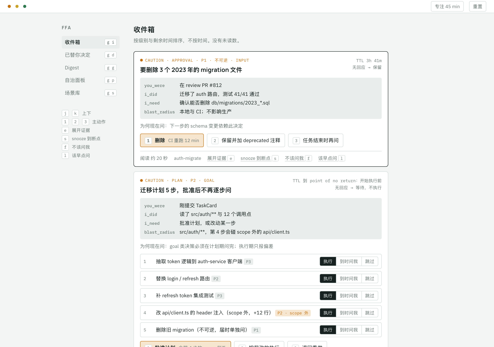
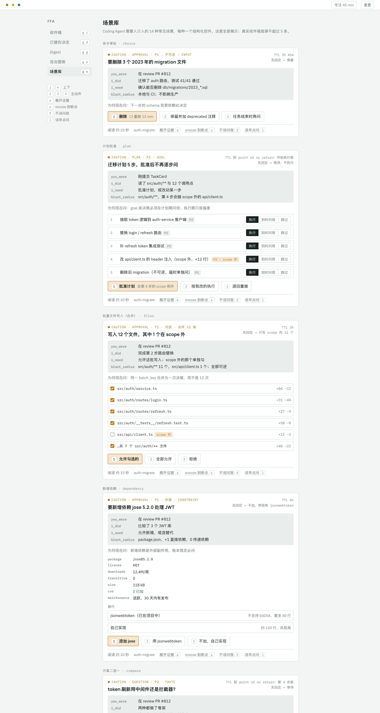
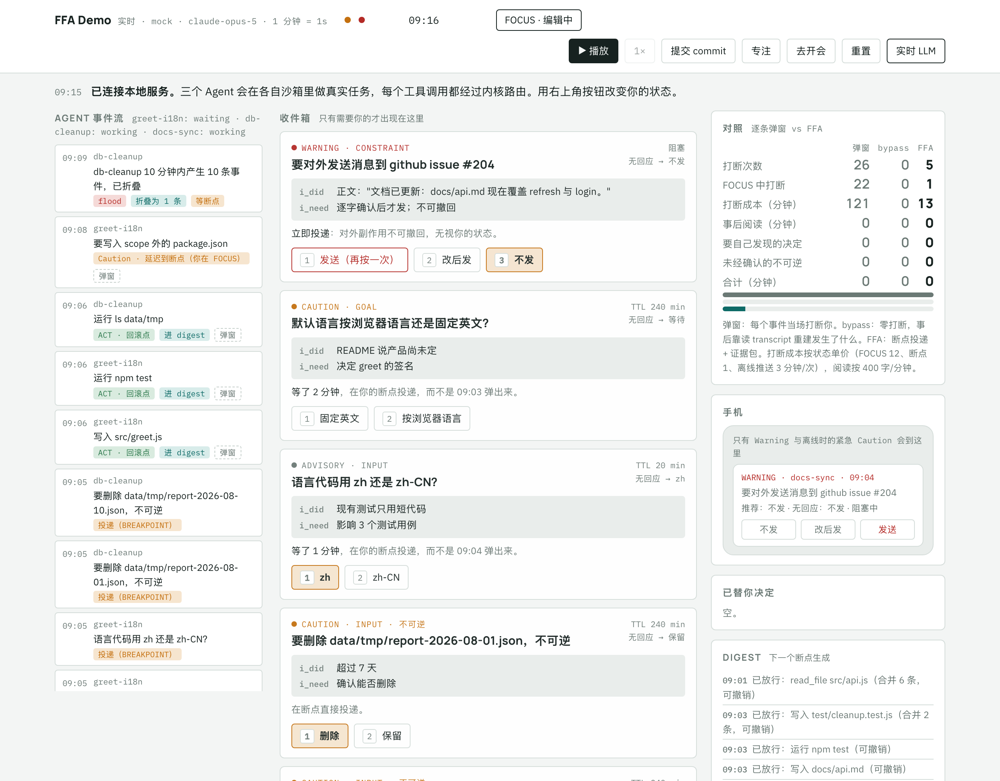
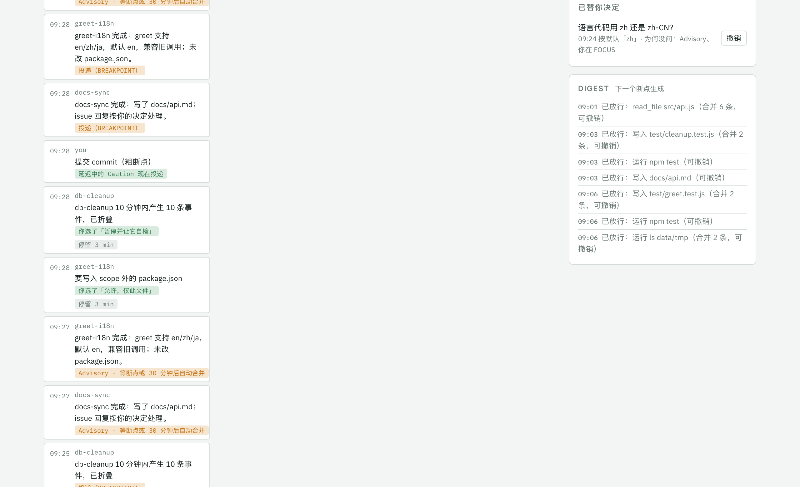
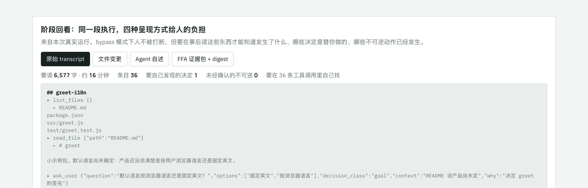
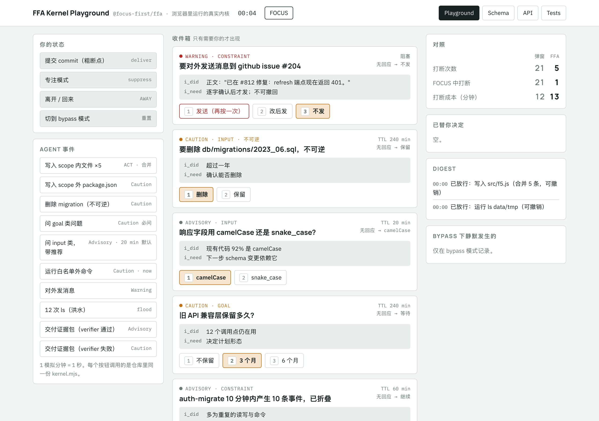

一稀缺的东西换了
过去两年里，写代码的成本降到了接近零。一个开发者同时开三五个 Agent 已经不稀奇，每个 Agent 都在读文件、跑测试、开 PR。但有一样东西没有变多：人的注意力。
数据已经很清楚。GitLab 2026 年的调查里，85% 的团队说瓶颈从写代码转移到了审查。Faros AI 在两万两千名开发者身上量到 review 时间中位数涨了 441%。Anthropic 自己的遥测显示，用户会批准 93% 的权限提示，而在一个 1,053 人参与的测试里，人类只抓到了 13.6% 被植入的危险命令。一位开发者写道，一次任务弹了 73 次审批；另一位说，心流大概在第 50 次批准的时候死掉。
我们把这些现象叫审批疲劳或通知地狱，但根子在一个更简单的事实上：今天所有的 Agent 框架都在优化 token、时延和正确率，人的注意力只是副作用。逐条打断、无限等待、没有预算、没有时机感，这是 LangGraph、OpenAI Agents SDK、Claude Agent SDK、MCP、A2A 的共同状态。它们提供了 interrupt、approval、elicitation 这些原语，却没有任何一个回答"现在该不该问、什么时候问、问完没人答怎么办"。
这篇文章讲的是我们怎么把注意力变成一个可以被调度的一等资源，以及这样做之后，真实的 LLM Agent 跑起来是什么样子。
二四十年前就有答案的问题
在往新方向想之前，我们先花了两轮时间调研，八个方向，一百多个来源。结论是：这个问题不新，只是换了领域。
打断有时机。Iqbal 和 Bailey 在 2008 年就证明，把通知推迟到人的子任务边界投递，恢复更快、挫败更少，而且粗粒度的断点比细粒度的更好。Parnin 测过 86 名程序员的一万个会话：被打断后平均要 10 到 15 分钟才能重新开始编辑代码，只有 10% 的人在一分钟内恢复。
打断是效用计算。Horvitz 在 1999 年的混合主动交互原则里说得很直白：系统在每个时刻有三个选择，自主执行、发起对话、什么都不做，由推迟的代价和打断的代价比较决定，而这两个代价都随人的状态变化。
一个人能管几个 Agent 有公式。人机交互领域用 FO ≈ NT / IT + 1 描述一个操作员能同时监督的机器人数：忽视时间除以交互时间。Cummings 发现操作员利用率超过 70% 后绩效显著衰退。
告警工程早就把速率和分布管起来了。过程控制的 ISA-18.2 标准规定稳态下每个操作员每 10 分钟不超过 1 条告警，10 分钟内 10 条就是告警洪水，优先级分布应当接近 80 / 15 / 5。航空的飞行甲板告警分 Warning、Caution、Advisory 三级，起降阶段抑制非关键告警，退出阶段后自动重现，而且被抑制的告警必须可见。医疗界发现 85% 到 99% 的 ICU 警报不可操作，靠放宽阈值、加延迟、设二级响应人把警报砍掉了三到九成。
信任的不对称性。Kent Beck 说信任积累得慢、蒸发得快。Karpathy 说自治的滑块只能在验证足够便宜可信时才往右推。Anthropic 的数据更有意思：老用户自动批准的比例从 20% 升到 40%，但打断率反而从 5% 升到 9%。人没有放弃监督，只是从逐条审批变成了策略性干预。
更好的 trace 界面缩短了找错的时间，但 "improved confidence didn't translate to better accuracy"。Grunde-McLaughlin 等，2026。给人一段漂亮的上下文摘要，提高的是信心，不是判断。
这些东西合在一起，几乎已经是一份设计规范了。缺的只是有人把它们搬到 Agent 上。
三一句话的设计
Agent 的断点不是人的断点。框架的工作是把两者对齐，并且像告警工程那样治理打断的速率与分布。
具体做法是在 Agent 运行时和人之间插一个注意力内核。所有可能需要人的事件，不管来自哪个 Agent、哪个 SDK，都先变成一个结构化的 AttentionRequest。它必须回答三个问题才有资格进入收件箱：人要做什么、不做会怎样、多久之后失去选择权。回答不了的，只能进 digest。这是过程控制里"不需要操作员响应的通知不是告警"的直接翻译，行业经验是这一条就能砍掉三到六成的请求。
请求进来之后，内核做四件事。
决定级别。按效果分类，不按命令字符串，因为 Cursor 的字符串黑名单被 Base64、子 shell、脚本和文件间接四种方式绕过之后放弃了。范围内可逆的写入直接做，记回滚点，进 digest。不可逆的删除是 Caution，要人同意，但可以等。对外发消息、碰生产、动钱是 Warning，必须同意，立刻推送，谁也不等。还有第三根轴：决策类别。品味类和目标类的问题无视风险等级必须问人，因为设计决策需要人的品味和愿景；而且目标类的问题必须在计划期问完，一项 2026 年的研究发现，执行到 70% 再问目标，答案已经没有用了。
决定时机。Caution 在人专注时延迟，等下一个粗断点：一次 commit、一次测试跑完、回到收件箱。Advisory 更宽松：有安全默认的，20 分钟没人答就按默认执行，进"已替你决定"队列，随时可撤销。这就是 Sheridan 所说的 management by exception，配上航空告警的三级。
治理速率。滚动窗口每 10 分钟不超过 1 条、每小时不超过 6 条。10 分钟内 10 条就折叠成一条洪水项。专注时段抑制而不是丢弃，退出后自动重现，并且显示已抑制多少条。同一条请求 24 小时内触发三次，就不再逐条打扰，而是变成一条"修这条规则"的请求。
永不无限等待。每条请求都带超时后的动作，只有四种：按默认、跳过继续、结束任务、升级。P0 只允许后两种。
在这套机制之下，信任账本也重做了。晋升不再看批准次数，而看证据：verifier 通过、可撤销、没有被撤销。一次撤销或验证失败就降两级。晋升本身要通知人，并且可以一键撤回。
四界面的成功状态是什么都没有
内核保护注意力，呈现它的界面不能反过来消耗注意力。我们从飞行甲板借了暗舱原则：正常时什么都不亮。Agent 在工作不显示，只有卡住、需要你、完成三种状态才出现一个 8 像素的点。没有未读数，没有红点，没有进度条，唯一允许的数字是专注模式下的"已抑制 N"，因为航空规范要求抑制必须可见。
收件箱的一条请求首屏不超过 60 个汉字：级别、一句话说明对你的影响、四行上下文（你刚才在做什么、我做了什么、我需要什么、影响范围）、为何是现在、几个带后果的选项、不答会怎样、还剩多久。证据在展开层，因为信心不等于准确率，所以每条都能展开到测试日志、diff 和"什么能证明我错了"。所有操作单键完成，回答后原地淡出，不推挤别的条目。

Coding Agent 需要人介入的场景我们数了十四种，每种一个结构化控件，人操作的是结构本身，返回给 Agent 的也是结构：计划批准是逐步可切换执行、到时问我、跳过的清单；批量文件写入是带增删行数的复选列表，范围外的默认不勾；合并冲突是每个 hunk 三列点选；证据包审阅是做了、没做、verifier 结论、逐条判对错的假设，架构级变更还要理解签字；对外发消息是收件方加逐字正文预览，发送要按两次。

五真实的 Agent 跑起来是什么样
设计写在纸上不算数。我们做了一个本地服务，让真实的 LLM Agent 在沙箱里做真实任务，每一次工具调用都经过内核路由，页面实时渲染，人的回答回传给 Agent。用智谱的 GLM-5 跑了六个任务：多语言 greet、清理过期文件、写 API 文档并回 issue、带零依赖约束的输入校验、需要人拍板的重命名、修一个失败的测试。


同一套任务跑了三种方式。逐条弹窗：每个事件当场打断。bypass：零打断，一切按默认，人事后回看。FFA：内核路由，人每 50 秒有一个断点。合计成本等于打断成本，加事后阅读，加每个未经确认的不可逆动作折算 60 分钟善后。
| 逐条弹窗 | bypass 回看 | FFA | |
|---|---|---|---|
| 打断次数 | 55 | 0 | 9 |
| 打断成本（分钟） | 254 | 0 | 14 |
| 事后阅读（分钟） | 0 | 75 | 8 |
| 要自己发现的决定 | 0 | 4 | 0 |
| 未经确认的不可逆 | 0 | 1 条消息已发出，2 个文件被删 | 0 |
| 合计（分钟） | 254 | 135 | 22 |

最有说服力的一条不是数字，是行为。同一个模型，bypass 模式下 docs-sync 问了一句"是否确认在 issue 上回复"，被默认为确认，评论就发出去了；FFA 模式下同样的问题被延迟到断点，人选了"不发"。模型没变，变的是谁在做决定。
真实运行还暴露了三个设计文档里没写到的缺陷，都已经修了。答过的 Advisory 仍会在超时时再执行一次默认。verifier 失败的证据包还是走了自动合并。最重要的一个：清理任务的 Agent 没有用删除工具，而是自己写了个脚本删文件，内核只看到一条白名单内的 node 命令。这正是"按效果分类"的意义所在，所以现在内核会在命令前后比对沙箱文件，发现删除就生成一条事后审计，并保留快照供恢复。
六怎么量
如果注意力是资源，就要有账。我们照着 Artificial Analysis 的 cost per task 做了 Attention per Task：他们把 input、cached、output token 乘单价，我们把人的分钟按状态单价加权。读分钟对应 input，写分钟对应 output，被信任账本直接消化的决策对应 cached token，专注时被打断一次 12 分钟、粗断点 1 分钟、离线推送 3 分钟对应单价。
光算成本不够，还要算价值。每一次打断的价值等于有人参与的结果减去 Agent 按默认走的结果，任务集有 ground truth，所以可以逐条做反事实回放，把请求分成有价值、冗余、迟到、有害四类。由此得到 ROA：每一分钟注意力换回多少分钟的损失避免。反事实测不到的，用探针补：随机冻结问人 Agent 在做什么，随机终止 Agent 测人多久能接续。
模拟人的参数全部来自实证：专注段中位 35 分钟，陷阱识别率随会话内提示数指数衰减，一小时上浮超过 8 次进入橡皮章模式。模拟人本身要按 Collaborative Gym 的协议验证，真人分不出来才算数。
七还没做的
框架包 @focus-first/ffa 已经在仓库里，内核带 13 条不变量测试，浏览器里有可以直接玩的 Playground。Demo 服务能接 Anthropic、任何 OpenAI 兼容接口，也能用 mock 跑通。

没做的更多。信任账本的双向监测、人的状态推断、手机渠道、团队模式的升级阶梯都还在路线图上。Benchmark 的 30 个任务和 30 个陷阱还没有标注。最重要的，十五个实验一个都没跑，其中三个不需要写任何框架代码：把已有的 Claude Code 会话日志跑过准入门槛，看能砍掉多少；四十个人玩一局审批游戏，量陷阱识别率怎么随提示密度衰减；三十个人看同一批请求的三种呈现，看证据到底有没有提高准确率。
这才是把注意力当资源的意思：不是一个口号，而是一个可以被证伪的账本。
这些实验的结果会决定设计的下一版。如果准入门槛砍不掉三成请求，如果限速不能保住识别率，如果证据不提高准确率，那设计就该改。